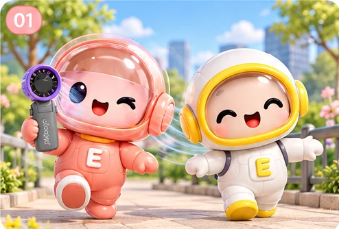
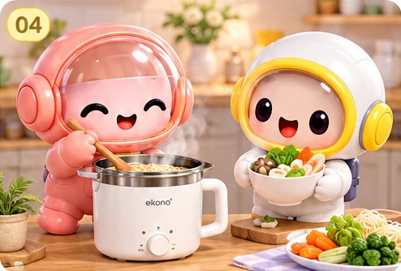
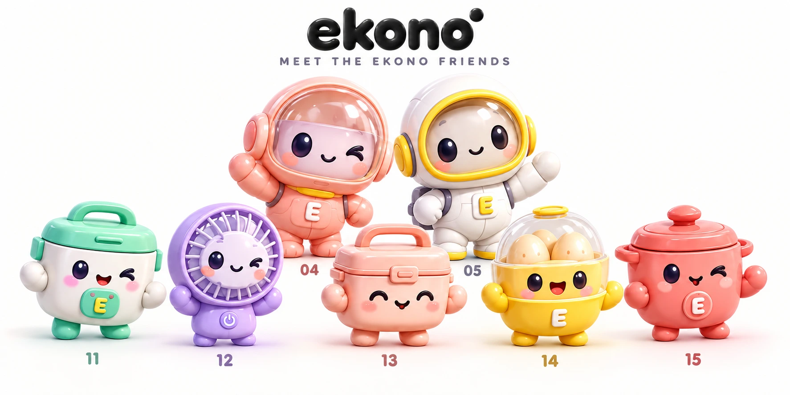
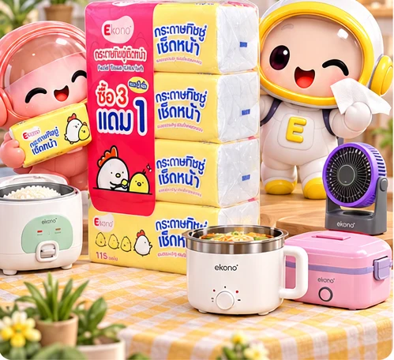

EKONO PLAY / YOUR EVERYDAY BUDDYเรื่องเล็กๆ
เรื่องเล็กๆ
ที่ทำให้ทุกวันสนุกขึ้น!
ของใช้คู่ใจ สีสันที่เป็นคุณ
ไปใช้ชีวิตด้วยกันกับสองเพื่อนซี้ EKONO
COOK. CHILL. CLEAN. REPEAT.

SMALL THINGS.BIG FUN! ✦
YOUR COLOR. YOUR VIBE. YOUR EKONO. ✦ ใช้ชีวิตให้สนุก ในแบบของคุณ ✦ YOUR COLOR. YOUR VIBE. YOUR EKONO.
FIND YOUR EVERYDAY MATCH
วันนี้คุณเป็นสายไหน?
เลือกไลฟ์สไตล์ แล้วให้น้องช่วยแนะนำ
YOUR LITTLE EVERYDAY BUDDIES
แก๊งตัวจิ๋ว พร้อมลุยทุกวัน!
แตะน้อง เพื่อรู้จักสินค้าคู่ใจ
MEET YOUR NEW BUDDIES
ของใช้ที่เข้ากับคุณ.
ข้อมูลรุ่นอ้างอิงจากเอกสาร EKONO ที่ได้รับ ภาพไลฟ์สไตล์เป็นภาพสร้างสรรค์เพื่อประกอบการนำเสนอ กรุณาตรวจสอบราคาและสินค้าพร้อมจำหน่ายกับสาขา
THE SECRET MENU CLUB ✦สูตรลับ
สูตรลับ
GEN Z
หิวยัง? รวมไอเดียเมนูวัยรุ่น
ทำง่าย อร่อยได้ด้วยเครื่องใช้ EKONO

เวลาทำเป็นค่าประมาณ ปรับตามปริมาณและเครื่องที่ใช้ ทำตามคู่มือเครื่อง และปรุงเนื้อสัตว์ให้สุกทั่วถึง
เพื่อนซี้ครบทีม สนุกทุกวัน
สองเพื่อนซี้ 04–05 กับแก๊งเครื่องใช้ไฟฟ้าตัวจิ๋ว 11–15


LITTLE MOMENTS, BIG SMILESตั้งแต่มื้อแรก
ตั้งแต่มื้อแรก
ถึงโมเมนต์เล็กๆ
ทำอาหารด้วยกัน พักรับลมเย็น แล้วหยิบทิชชู่ให้เพื่อน
ให้ EKONO อยู่ในวันธรรมดาที่แสนพิเศษของคุณ